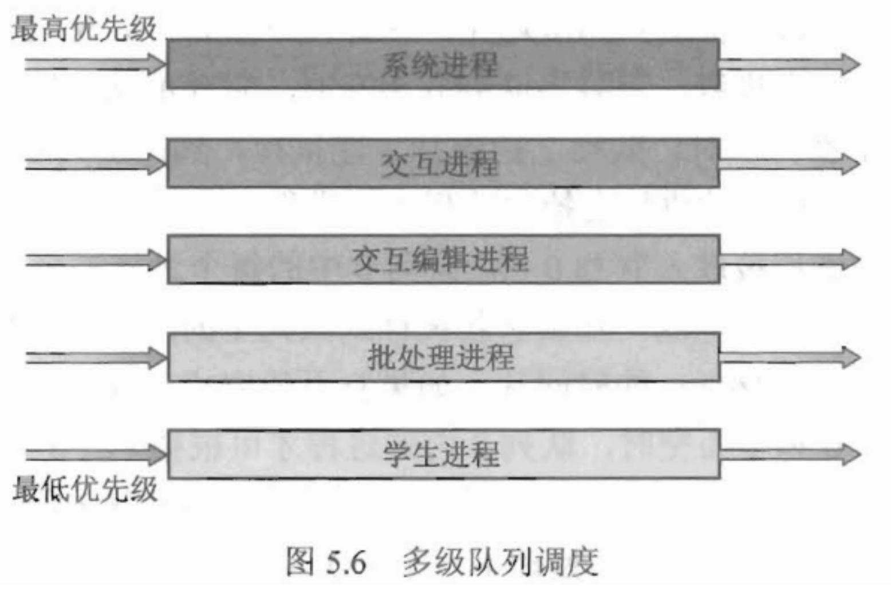
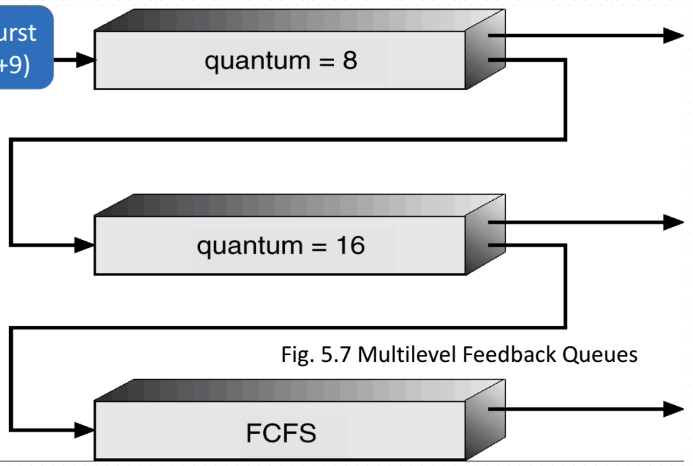
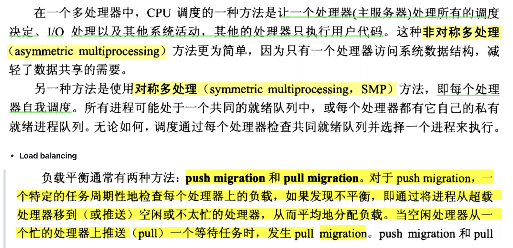
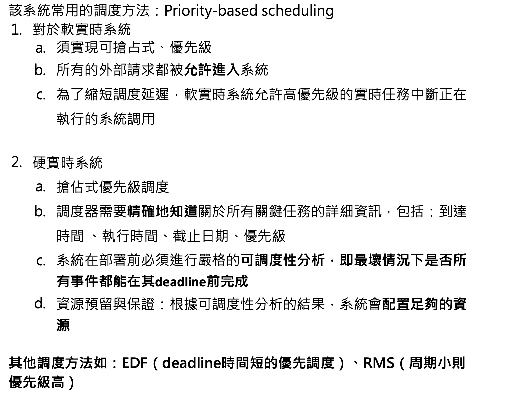

CH5--CPU scheduling
CPU scheduling
1. Definition
To avoid the monopoly of the CPU by a single process, CPU scheduling is necessary.
CPU scheduling include:
- Scheduler : Select a process from the ready queue to load into memory.
- Dispatcher : it is used to pass CPU control to the process selected by the scheduler.
CPU scheduling types :
- Preemptive
- Non-Preemptive
2. Scheduling criteria
- rate of CPU utilization : $\frac{user_{process} + complie_{time}}{T} * 100%$
- Throughtout : finished process numbers divied by all time.
- Turnarround time : a process lifecycle
- waiting time : the time of process hasn’t distributed CPU (in ready queue), don’t include IO
- response time : time of the process request and get response.
3. Scheduling Algorithm
- FCFS
- first come first handle.
- Non-preemptive
- SJF
- always distribute CPU to a process which has a smallest burst.
- preemptive(SRTF) or Non-preemptive(SJF)
- Priority Scheduling
- distribute CPU to a process which has smaller priority number.
- always preemptive, but Non-preemptive also ok.
- use aging to solute starvation problem.
- Round Robin
everytime, Time quantum will distribute for the first process in the ready queue.
it is preemptive when time quantum is over
- MLQ

- MLFQ
- Queue follow by queue, first queue has the most priority.

if a process can not finish in the first queue, it would put to the second queue.
Different queues can implement different scheduling algorithms.
4. Multiprocessor scheduling

5. Real-Time-System
is a computer system, it must react event when the deadline is coming.
Two type :
- Hardware real time : system promise it can finish the task before the deadline.
- Software real time : system don’t promise it can finish.
